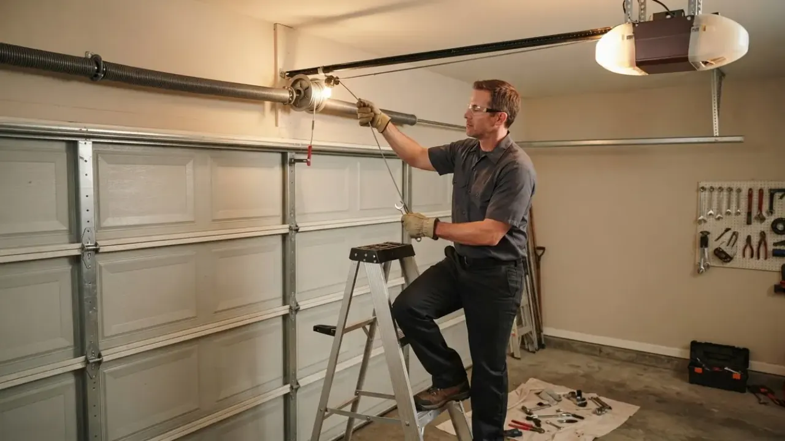

Same-day service for springs, cables, openers, and off-track doors
Garage Door Repair in Tampa Done Right the First Time
Garage door repair in Tampa means getting the door moving again without the runaround. Broken torsion springs, snapped cables, dead openers, and doors stuck halfway open are handled across Hillsborough County. Whether the call comes at 2 a.m. or for a scheduled tune-up in South Tampa, the techs arrive with the right parts and the right tools. One call, one visit, done.
Live dispatcherUpfront optionsBacked workmanship
The basics
What Is Garage Door Repair?
A garage door repair visit is about finding what stopped the door working and putting it right. The usual suspects are springs, cables, rollers, tracks, and openers, and the symptoms are a door that will not open or close, moves unevenly, grinds or bangs, or reverses for no clear reason. Diagnosis comes first and the fix second, with a test at the end, so the same fault does not return the next day.
What's included
What our Garage Door Repair includes
Every repair visit covers diagnosis, the failed part, and a full safety test. Anything else found worn is shown to you and left to your decision, with no pressure. Here is what comes standard.
Full system diagnosis
Springs, cables, drums, rollers, hinges, tracks, and opener are tested under load. The failure and its cause are explained clearly, with a flat-rate price agreed before any work begins.
Failed part replacement
Springs, cables, rollers, hinges, sensors, and opener components are replaced with matched parts. Cycle-rated torsion springs and galvanized steel cables rated for Florida humidity go in.
Balance and tension set
After the repair, the door is balanced to hold position at halfway and spring tension is set with a torque wrench. An unbalanced door wears out rollers and opener gears fast.
Safety reverse test
The auto-reverse is tested against the 2-inch standard and the photo eye sensors are verified aligned and working. A door that fails is adjusted before we leave, with no extra charge.
Lubrication and cleanup
Springs, hinges, and bearing plates get garage door lubricant. Old parts and packaging are swept up, and the car is back in the garage before we go.
Service overview
What Garage Door Repair in Tampa actually involves
Repair in Tampa means diagnosing and correcting any failure in the door system: springs that counterbalance the weight, cables and drums that lift it, tracks that guide it, and the opener that drives it. A standard door weighs 150 to 300 pounds, so a snapped torsion spring or a cable off its drum makes the door dangerous fast. Components are tested under load, every one of them, not just the one that broke.
Tampa homeowners call most often after a loud bang from the garage, a door that reverses for no reason, or a remote that stopped working. Salt air near the bay corrodes cables and hinges faster than inland, and summer heat cycles wear springs out sooner. A crew that stocks LiftMaster and Chamberlain parts on the truck is set up for exactly that kind of call.

How we workWe verify the cause, compare realistic options, and confirm the repair before we leave.
The service timeline
How our garage door repair process works
Every repair follows the same backbone, though the fault decides the details. Five steps carry it from the first call to the walkthrough.
Phone diagnosis
The symptom is described first: banging, reversing, stuck, or silent. Three or four questions narrow it down, then a realistic arrival window is given. Most calls are triaged in under five minutes.
On-site inspection
The opener is disconnected, the door is tested by hand, and the springs, cables, drums, rollers, and tracks are inspected. A straight answer on what failed and what it costs comes before any work starts. A typical inspection takes 15 to 20 minutes.
Repair or replace
What failed is replaced, along with anything about to fail. A snapped cable usually means a worn drum; a broken spring often means the other one is close behind. The worn parts are shown and the call is explained in plain terms.
Balance and safety test
After the repair, the door is balanced to stay put at the halfway point, spring tension is set with a torque wrench, and the opener runs through three full cycles. Photo eye sensors are aligned and tested against the 2-inch reverse standard.
Walkthrough and warranty
The door runs with you watching, the warranty paperwork is handed over, and the monthly safety-reverse test is shown. Anything that feels off in the first 30 days brings us back at no charge.
Tools & methods
Tools and methods we use
Repair work is only as good as the gear behind it. These are the tools that let the job be done right the first time.
Garage door torsion spring winding bars
Torsion springs are wound and unwound safely under load. Wrong-sized bars slip and cause injuries, so matched sets are carried for every spring size installed.
Garage door torque wrench
Tension is matched to the door's actual weight. Too much or too little, and the door will not balance, wearing the opener out faster.
Garage door sensor alignment tool
Photo eye sensors are aligned precisely so the door does not false-reverse. The 2-inch obstruction test verifies it before we leave.
Garage door track bender
Small bends in the vertical and horizontal track are straightened without removing it. Severe bends get the section replaced instead.
Garage door opener remote tester
A remote or keypad is confirmed transmitting at full strength, or the opener receiver is shown to be the problem. It saves buying a remote that is not needed.
Garage door panel lift
Replacement panels are supported and positioned safely. Holding a steel panel by hand while aligning hinges is how fingers get hurt.
Use cases
When Tampa homeowners call us
Tampa repair calls follow a few familiar patterns. These are two recent ones, and how each was handled.

Off-track door back on the rails
A South Tampa door jumped the track after a car bumper clipped the bottom panel. The door hung at an angle and could not be closed, with one roller shattered and the vertical track bent. The door was secured, the roller set replaced, the track straightened with a track bender, and the dented bottom panel replaced.
Dead opener to smart control
A Westchase homeowner's 12-year-old opener finally died with the door halfway up. The remotes and keypad stopped working, and the door was too heavy to lift by hand. A new belt-drive LiftMaster opener went in, the remotes and wall mount keypad were reprogrammed, and the smart app connected.
Problems we solve
Common garage door problems we fix fast
Most calls fall into a handful of categories. Here is what is seen every week in Tampa and how it is handled.
Broken torsion spring with a loud bang
The pair of torsion springs is swapped together, matched to the door weight and rated for 15,000 to 25,000 cycles. Proper winding bars and cones do the winding, then the door is balanced and tested.
Door reverses or will not close
Photo eye sensors are aligned, the wiring is checked, and the auto-reverse is tested. When the logic board is at fault, it is diagnosed and a repair or replacement is quoted on the spot.
Snapped cable and door hanging crooked
The door is secured, both galvanized steel cables are replaced, and the drums and winding cones are inspected. A worn drum is replaced so the new cable is not cut within weeks.
Grinding, squealing door
The roller set is replaced, the hinges are checked, and the springs and bearing plates are lubricated. Tracks are not greased, since that attracts grit and slows the door down.
Pricing process
What Garage Door Repair costs in Tampa
$150 - $700 depending on scope
Type of failure
Thirty minutes covers a sensor alignment. A torsion spring replacement takes about 90 minutes and carries a higher parts cost. Most of the price difference comes down to which component failed.
Door weight and size
Lighter springs serve a single-car door than a two-car insulated one. Heavier doors take higher-cycle springs and sometimes upgraded rollers, and that shows in both parts and labor.
Parts quality
Standard 10,000-cycle springs cost less than 25,000-cycle springs. Both are quoted when it makes sense, and the choice follows how long the house will be kept.
Cost factors at a glance
| Cost factor | What affects the price |
|---|---|
| Typical range on this page | $150 - $700 depending on scope |
| Type of failure | Thirty minutes covers a sensor alignment. |
| Door weight and size | Lighter springs serve a single-car door than a two-car insulated one. |
| Parts quality | Standard 10,000-cycle springs cost less than 25,000-cycle springs. |
Ranges are the ones stated on this page; you get a written estimate before work starts.
Customer reviews
What tampa customers say
★★★★★
“My torsion spring snapped on a Saturday morning with both cars trapped inside. They had a tech at the house by noon, replaced both springs, and balanced the door. Price was exactly what they quoted on the phone. The tech showed me the old springs and explained the cycle rating difference. Door has been quiet for months.”
★★★★★
“Our door kept reversing halfway up and the sensor light was blinking. Turned out to be a misaligned photo eye and a worn roller set. They fixed both in under an hour and did not try to sell me a new opener. I appreciated that. The garage is quieter now too.”
★★★★★
“I manage several rentals and use them for all the garage calls. They show up when they say, invoice what they quote, and the tenants have never complained. Last month they replaced a keypad and a set of cables at one property and were done before lunch. That reliability is why I keep calling.”
Book with confidence
What to Look for Before You Book
Booking blind is how a simple repair turns into a surprise bill. A few checks first will stop that.
- The licence number is asked for before work starts and matched to the name on the quote.
- Recent reviews get read for punctuality, pricing, and follow-up, not just the star rating.
- The price arrives in writing before work starts, parts and labour included, with an answer on what happens if more work is found once the door is open.
- Warranty cover for parts and work, and its length, comes in writing.
- A marked vehicle and a technician able to say who they are and which company sent them.
- The price should include a safety test and a walkthrough at the end, so the door is seen working before they leave.

How much does garage door repair cost in Tampa?
Most repairs run $150 to $450 in 2026, with spring replacements at the higher end and roller or sensor fixes at the lower end. New openers installed run $350 to $700. The price depends on the part, the door weight, and whether the track needs realignment. We quote flat-rate before starting, so the number you hear is the number you pay.
Who fixes garage doors in Tampa?
We do, and we are a garage door contractor (licence number available on request) working across Hillsborough County. Our techs handle torsion springs, cables, openers, tracks, and panels on residential doors. If you need a garage door fix near me Tampa fl and want someone who carries the right parts, call us and we will give you a real arrival window.
Can you repair a garage door same day in Tampa?
Yes. Same day garage door fix Tampa bookings are the norm, not the exception. If you call before early afternoon, we can usually have a tech at your door within a few hours. Emergency calls after hours get dispatched through our 24/7 line. We stock the common parts, so most same-day calls finish in one visit.
What is the best garage door fix in Tampa?
The best fix is the one that addresses the root cause, not just the symptom. A door that reverses randomly usually needs sensor alignment, not a new opener. A door that bangs and drops needs springs, not lubrication. We diagnose first, then recommend the repair that gets you the longest service life for the money.
What is the most common garage door repair in Tampa?
Broken torsion springs are the most common, followed by snapped cables and worn rollers. Springs fail because they wear out after thousands of cycles, cables fray from rust and use, and rollers crack with age. Most of these can be fixed in one visit, since the parts are carried on the truck. A yearly tune-up catches them before they fail, which is cheaper than an emergency call.
How can I tell if my garage door needs a repair in Tampa?
Watch for a door that is noisy, slow, or jerky, one that stops partway, reverses for no reason, or sits crooked in the opening. A loud bang from the garage usually means a spring has snapped. A door that feels very heavy by hand is another warning sign. Any of these means the door should be checked, because small faults get worse and can damage the opener if they are left.
Should I repair my garage door or wait until it breaks in Tampa?
Repair it early. A worn roller or a fraying cable is a small job, but if it fails completely it can bend a track, burn out the opener, or leave the door stuck shut with your car inside. Early repairs cost less and can usually be booked at a time that suits you, instead of an emergency visit. If the door is working fine, a yearly tune-up is enough, and the technician will tell you what is wearing out before it becomes a problem.
Related services
Related Services

Garage Door Spring Repair
Broken torsion or extension springs are the most common garage door failure in Tampa. Both springs are replaced as a pair, the cycle rating matched to the door weight, and wound with proper winding bars so the door balances correctly.
Garage Door Opener Repair
An opener that runs without moving the door usually has a stripped gear, a dead capacitor, or a logic board fault. LiftMaster, Chamberlain, Genie, and Craftsman units are repaired, with the safety reverse tested before we leave.
Garage Door Cable Repair
A snapped cable drops a door fast. Galvanized steel cables go in while the drums and winding cones are inspected too, since a worn drum cuts a new cable within weeks when it is left alone.Ready when you are
Need Garage Door Repair in Tampa today?
The phone is answered, a real arrival window is given, and a flat rate is quoted before work starts. The truck is stocked with the parts the door needs. Call now and the garage will be working again.

Talk with the local team
Request Garage Door Repair
Call, text or email and a real person answers, day or night. Tell us what the door is doing and we will give you a price range on the spot plus the soonest arrival window. Most calls placed before mid-afternoon get a same-day visit anywhere in Hillsborough County.